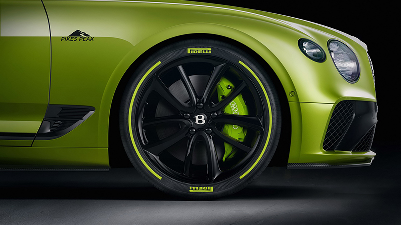

Lenovo เผยโฉม Tab M10 HD Gen2, P11 Pro และ Smart Clock Essential รุ่นใหม่ล่าสุดใหม่ล่าสุด
ช่วงสัปดาห์ก่อนทีม Sanook Hitech ได้รับฟังการเปิดตัวสินค้าใหม่จาก Lenovo ล่าสุดตอนนี้ Lenovo ได้เผยโฉม Tablet และ นาฬิกาตั้งโต๊ะอัจฉริยะรุ่นหใม่ออกมา โดยรายละเอียดของแต่ละสินค้ามีดังนี้
Lenovo Tab P11 Pro
มาพร้อมกับหน้าจอขนาด 11.5 นิ้ว พร้อมกับหน้าจอ OLED ความละเอียดสูงพีดับ 2560x1600 พิกเซล รองรับค่า HDR10 และแสดงผล Dolby Vision พรอมกับลำโพง 4 ตัวจาก JBL ที่ให้คุณภาพสูงและรองรับ Dolby ATMOS ชุมพลังของ Tablet รุ่นนี้ใช้ Qualcomm Snapdragon 730G RAM 6GB, ROM 128GB สามารถต่อเชื่อมกับ Keyboard และใช้งานปากการองรับแรงกด 4,096 ระดับ และใช้งานนานถึง 1,000 ชั่วโมง ได้เช่นเดียวกัน
ทั้งนี้ Tablet ของ Lenovo Tab P11 Pro จะวางจำหน่ายในเดือนพฤศจิกายนนี้ โดยราคาเติมตัวเริ่มต้นที่ 699 ยูโร หรือราวๆ 26,000 บาท
Lenovo Tab M10 HD Gen 2
ยังมาพร้อมกับฟีเจอร์ที่เหมาะสำหรับเด็ก โดยเฉพาะฟีเจอร์ Google Kids Space โหมดที่เหมาะกับเด็ก ผ่านการคัดเลือกเนื้อหา หนังสือ, วิดีโอผ่าน Google Play โดยตัวเครื่องรุ่นนี้มีขนาดหน้าจอ 10.5 นิ้ว ความละเอียระดับ HD ยังคงได้ลำโพงเสียงแบบ Dolby ATMOS
ขุมพลังแบบ Octa Core ความเร็ว 2.3 GHz พร้อมกับหน้าจอป้องกันแสงสีฟ้า TUV Rheinland เรียกได้ว่าตัวเครื่องที่เหมาะกับการใช้เรียนและการศึกษา โดยราคานั้งมีหใ้เลือกดังนี้
1.รุ่นเริ่มต้น 159 ยูโร หรือประมาณ 5,900 บาท (วางจำหน่ายเดือนกันยายน)
2.เพิ่ม Google Assistant ราคา 179 ยูโร หรือประมาณ 6,500 บาท (วางจำหน่ายเดือนตุลาคม)
3.รุ่นสั่งงาน 199 ยูโรหรือประมาณ 7,400 บาท (วางจำหน่ายเดือนพฤศจิกายน 2020)
Lenovo Smart Clock Essential
อีกชิ้นที่มีการเปิดตัวอย่างเป็นทางการและออกมาต่อยอดกับรุ่น Lenovo Smart Watch และมาพร้อมกับจุดเด่นที่น่าใช้ ไม่ว่าจะเป็นหน้าจอ LED ดูเรียบง่ายแสดงผลเวลา, icon เกี่ยวกับการปิดไมค์ เวลาปลุก และรวมลำโพงแบบ 3W และสามารถสั่งงานผ่าน Google Assistant ได้เช่นเดียวกัน และมีไฟเรือแสงด้านหลังเวลาปิดไฟ
โดยนาฬิการุ่นนี้มีราคาอยู่ที่ 59.99 ยูโร หรือประมาณ 2,300 บาท เริ่มขายในเดือนกันยายน ที่จะถึงนี้ ส่วนรายละเอียดของ Notebook ที่เปิดตัวในช่วงเวลานั้น รอติดตามเร็วๆ นี้
Bentley Continental GT Pikes Peak Limited Edition ยนตรกรรมรุ่นพิเศษเริ่มเดินหน้าผลิตจริงแล้ว
เป็นเวลากว่า 8 เดือนหลังจาก Bentley Continental GT Pikes Peak Limited Edition ได้รับการเผยโฉมครั้งแรก ในที่สุด ยนตรกรรมรุ่นพิเศษนี้ก็ได้เข้าสู่สายการผลิตเป็นที่เรียบร้อยแล้ว ก่อนเริ่มส่งมอบอย่างเป็นทางการในเดือนกันยายนนี้
Continental GT Pikes Peak Limited Edition คือรุ่นพิเศษที่ถูกสร้างขึ้นเพื่อยกย่องให้แก่การสร้างสถิติไต่ยอดเขาไพค์ พีค ในรายการ Pikes Peak International Hill Climb เมื่อปีที่ผ่านมา โดยครั้งนั้น Continental GT สามารถสร้างสถิติใหม่และจบด้วยเวลา 10:18.488 นาที
รถรุ่นพิเศษนี้จะถูกผลิตในจำนวนจำกัดเพียง 15 คันเท่านั้น ตัวถังภายนอกโดดเด่นด้วยสีเขียว Radium ตกแต่งด้วยวัสดุสีดำเงาตามจุดต่างๆ ควบคู่ไปกับคาลิปเปอร์เบรกสีเขียว Acid Green ซึ่งจับคู่กับล้อออัลลอยขนาด 22 นิ้วสีดำ และกระจังหน้าประทับตัวเลข '100' แสดงถึงการเฉลิมฉลองความสำเร็จที่เกิดขึ้นในรอบหนึ่งร้อยปีของบริษัท
ภายในห้องโดยสารได้รับการการออกแบบมาเป็นพิเศษด้วยเบาะที่นั่ง Alcantara ลวดลายแบบรังผึ้ง พร้อมเดินตะเข็บด้วยด้ายสีเขียว Radium บนเบาะที่นั่ง และพวงมาลัย ขณะที่คอนโซลหน้าถูกตกแต่งด้วยคาร์บอนไฟเบอร์ วัสดุ piano black และลวดลายกราฟฟิกเส้นทาง Pikes Peak ปิดท้ายด้วยลำโพง B&O ตกแต่งด้วยสีเขียวRadium และสีดำ Black Anodized

ขุมพลังในรุ่นพิเศษนี้ยังคงใช้เครื่องยนต์ W12 ความจุ 6.0 ลิตร ทวินเทอร์โบ ให้กำลังสูงสุด 635 แรงม้า และแรงบิดสูงสุด 900 นิวตันเมตร ทำอัตราเร่ง 0-100 กม.ต่อชม. ได้ภายใน 3.7 วินาที และท็อปสปีด 333 กม.ต่อชม.